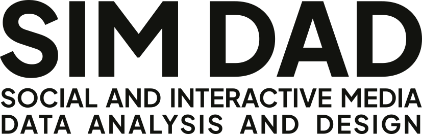

Media kitBrand assetsPress materials
Brand and media resources.
Logos, colors, typography, product descriptions, and boilerplate copy for press, partnerships, and editorial use. Everything you need to represent SIM DAD LLC and its products accurately.
Color palette
Brand and product colors.
One company accent, four product accents, and black text on white. Product colors are used only in their respective contexts, never mixed across products.
-
Proof Red#B3261ECompany accent. Margin marks, links, and buttons on simdadllc.com.
-
Ibis Blue#0072B2Ibis product accent. useibis.app only.
-
TASS Green#256B50TASS product accent. usetass.app only.
-
Lector Pencil#2348A8Lector product accent. uselector.app only.
-
Orator Mauve#CC79A7Orator product accent. useorator.app only.
-
Primary Text#000000Headings and body text. Inverts to #EDEDED in dark mode.
Typography
Source Serif 4 and Public Sans.
Source Serif 4 sets the headings and text on simdadllc.com, and Public Sans sets the captions, navigation, and buttons. Each product site uses its own typefaces, chosen for its subject.
Logo downloads
Marks and wordmarks.
SVG is the preferred format for digital use. PNG exports are available for contexts that require raster images. Always maintain clear space equal to the height of the "D" in DAD around all sides of the mark.
-
Primary wordmark

-
Wordmark, reversed
-
SD Matrix monogram


Usage guidelines
Do and don't.
- DoUse the wordmark on white, off-white, or dark backgrounds with sufficient contrast.
- Don'tPlace the logo on busy photographs or patterned backgrounds without a solid container.
- DoMaintain the original proportions. Scale uniformly. Minimum width: 120px digital, 1" print.
- Don'tStretch, rotate, add effects, change colors beyond the provided variants, or crop any part of the mark.
- DoWrite "SIM DAD" (two words, no dashes) in copy. Use "SIM-DAD" only in file paths, URLs, and repo names.
- Don'tWrite "Sim Dad," "SIMDAD," "Sim-Dad," or "SimDad." The name is always uppercase: SIM DAD.
Products
The product portfolio.
Six desktop products, each built from our own research needs. Desktop applications run entirely on the user's machine: no cloud dependency, no telemetry, no subscriptions. One-time purchase with included point updates.
-
TASSText Analysis for Social Scientistsusetass.app
Dictionary-based text scoring that is deterministic and provenance-first: every run writes a manifest with versions, hashes, and citations. The free, open-source Community Edition (Apache-2.0) carries the engine, CLI, and MCP server; the GUI Edition adds a no-code workbench with inferential statistics, publication charts, and APA-ready reports.
-
ReseroWorkbench for sensitive materialuseresero.app
One window where transcripts, drafts, de-identification, and narrated video live together, entirely on the user's machine, encrypted at rest with the open age format. Hosts Ibis, Lector, Orator, and Velamen. Ibis, Lector, and Orator are also sold standalone; Velamen comes only with Resero. TASS is its companion analysis instrument, a separate product.
-
IbisAutomatic transcriptionuseibis.app
Watches a folder and auto-transcribes audio using local Whisper models. No cloud, no API keys. Originals are kept; encryption is non-destructive and optional.
-
LectorManuscript editor with read-alouduselector.app
Distraction-free Markdown manuscript editor with source and visual modes and built-in read-aloud for proofing by ear. Offline neural voices are on the roadmap as a free update.
-
OratorDocument-to-video pipelineuseorator.app
Turns Markdown documents into narrated, camera-ready videos with local text-to-speech. One pipeline: parse, narrate, render slides, compose MP4.
-
VelamenData minimization aidincluded with Resero
Helps strip identifying data from research material before it is shared. Built with the intention to support adherence to privacy standards; it does not promise compliance outcomes. The engine, @simdad/wordlist-core, is open source (Apache-2.0) on GitHub and npm.
Boilerplate
About SIM DAD LLC.
Short (1 sentence): SIM DAD LLC is a communication consulting practice that builds the local-first research software it uses in its own work.
Medium (2 sentences): SIM DAD LLC is a communication consulting practice led by Alex P. Leith, Associate Professor at SIUE, that audits and strengthens external communications, designs and runs studies, and partners on grants. The practice also builds the desktop research software it uses in that work: TASS, Resero, Ibis, Lector, Orator, and Velamen, which comes with Resero.
Full: SIM DAD (Social and Interactive Media Data Analysis and Design) is a communication consulting practice that combines academic rigor with applied delivery. Led by Alex P. Leith, the practice designs studies, runs data pipelines across hundreds of millions of records, and produces findings that hold up to peer review. Its software portfolio grew directly from research needs: TASS for dictionary-based text analysis, Resero as a secure workbench for sensitive material, Ibis for automatic transcription, Lector for manuscript editing with read-aloud, Orator for document-to-video production, and Velamen for data minimization. Every desktop product runs entirely on the user's machine with no cloud dependency, sold as a one-time purchase rather than a subscription, and the TASS Community Edition and Velamen engine are free, open-source software.